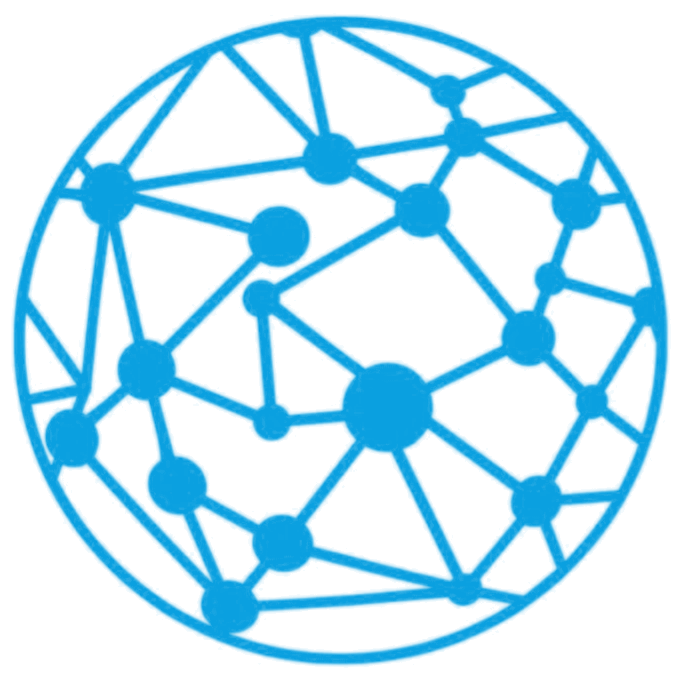
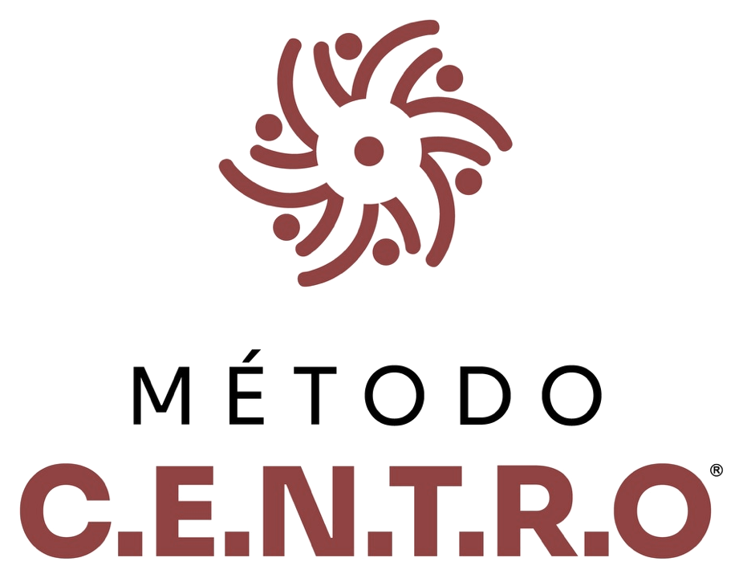
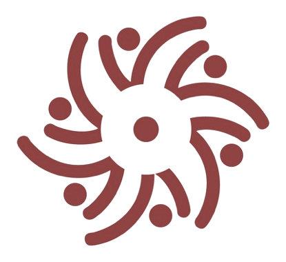

Fotografia real
Fase 3 · Design System
O sistema visual do website: cores, tipografia, espaçamento e componentes, construídos à volta de uma ideia simples: pontos que se ligam.
Cores oficiais extraídas dos logótipos. Azul Conexão Positiva e marsala Método C.E.N.T.R.O. Os tons derivados e os neutros areia são propostas; os HEX exatos afinam-se quando chegar o manual de marca.

Cor
Areia como fundo, o azul da marca para ação e confiança, azul-marinho para os momentos de ênfase e o marsala do Método como único acento quente.
~70 % areia e branco · ~22 % azul (ação, ênfase, símbolo) · ≤ 5 % marsala
Calculados no browser a partir dos tokens em uso. O azul oficial é decorativo sobre fundo claro; sobre azul-marinho pode ser usado em destaques.
| Exemplo | Combinação | Rácio | Resultado |
|---|
Marcas
A Conexão Positiva é um globo de pontos ligados; o Método C.E.N.T.R.O. são seis figuras à volta de um centro. Usados sempre sem alterações.


Tipografia
Botões
Pílulas com Inter 600. A seta desloca-se no hover; o foco é sempre visível.
Formulários
Altura de 52 px, texto a 16 px, label sempre visível. Experimente escrever e sair do campo de e-mail.
Etiquetas e filtros
Cards
Serviços, eventos, experiências e artigos. O card inteiro é clicável; no hover a imagem aproxima-se e a seta avança.
Assinatura
A secção mais forte do site. Passe o rato, clique ou use as setas do teclado; com "reduzir movimento" ativo, a mudança é instantânea.
Método próprio
Ícones
Proposta inicial para os oito serviços e os seis pilares.
Espaço, forma e movimento